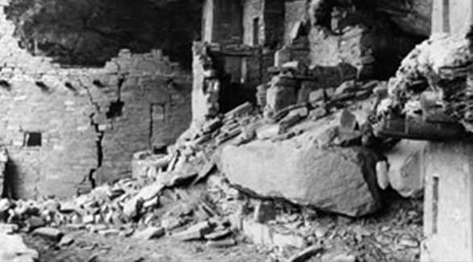

Inside Balcony House
Balcony House
With 40 rooms, Balcony House is considered a medium size cliff dwelling. Only 10 sites in the park have more. Evidence of how room and passageway construction in the alcove evolved through time can easily be seen in Balcony House. Today, the tunnel, passageways, and modern 32-foot entrance ladder are what make it the most adventurous cliff dwelling tour in the park.
You may enter Balcony House by ranger-guided tour only. Tours are offered from late April to mid October. Purchase tickets for these one-hour tours at the Mesa Verde Visitor and Research Center before driving to the site.
Pre-excavated view of Balcony House
A prospector, S. E. Osborn, first entered Balcony House in the spring of 1884. His name and the date March 20, 1884, have been found in a dwelling in lower Soda Canyon. In a newspaper article published late in 1886, Osborn describes some of the sites he visited in the Mesa Verde in 1883- 1884. One of the descriptions is very similar to that of Balcony House. There is little doubt that he entered it.
Jesse Nusbaum excavated Balcony House in 1910. Nusbaum was not only an accomplished archeologist, he was also one of the first superintendents of Mesa Verde National Park.
The Tour
The one-hour Balcony House tour is one of the most intimate yet adventurous tours at Mesa Verde. A visit to Balcony House will challenge your fear of ladders, heights, and small spaces, and will give you the opportunity to explore the common areas of a mid-sized, 40-room dwelling.
The Balcony House tour requires visitors to descend a 100 foot staircase into the canyon; climb a 32 foot ladder; crawl through a 12 foot, 18 inches wide tunnel; and clamber up an additional 60 feet on ladders and stone steps.
Once you purchase your tickets, drive to the Balcony House parking lot, and meet the ranger at the benches under the shade ramada for your scheduled tour.